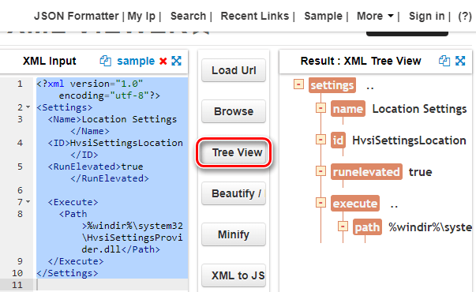
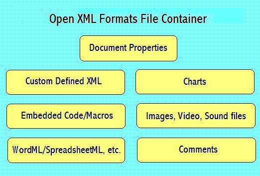
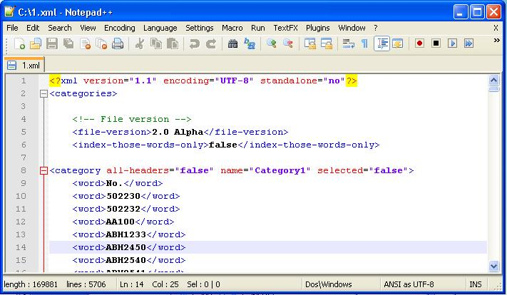

XML
-
XML
[Wiki]
-
мова розмітки, створений консорціумом World Wide Web Consortium (W3C) для визначення синтаксису кодування документів, які можуть бути прочитані людьми і машинами. Він робить це за допомогою тегів,
які визначають структуру документа, а також те, як документ повинен зберігатися і транспортуватися.
Найпростіше порівняти його з іншою мовою розмітки, з яким ви можете бути знайомі, - мова
гіпертекстової розмітки (HTML), який використовується для кодування веб-сторінок. HTML використовує визначений
набір символів розмітки (короткі коди), які описують формат вмісту на веб-сторінці.
Однак, відмінність XML в тому, що він є розширюваним. У XML немає визначеного мови розмітки, як у HTML. Замість цього, XML дозволяє користувачам створювати свої власні символи розмітки для опису контенту,
формуючи необмежений і самовизначатися набір символів.
По суті,
HTML - це мова, яка фокусується на поданні контенту, в той час як
XML - це виділений мову опису даних, який використовується для зберігання даних.
XML часто використовується в якості основи для інших форматів документів, яких сотні. Ось кілька, які ви можете дізнатися:
- RSS і ATOM описують, як додатки повинні обробляти веб-канали.
- Microsoft .NET використовує XML для своїх файлів конфігурації.
- Microsoft Office використовує XML в якості основи для структури документа.
Таким чином, якщо у вас є XML-файл, це не обов'язково говорить Вам, для якого додатка він призначений. Втім, Вам і не потрібно турбуватися про це, якщо тільки ви не розробляєте XML-файли.
Як відкрити XML-файл?
Існує кілька способів відкрити XML-файл безпосередньо. Ви можете відкривати і редагувати їх за допомогою будь-якого текстового редактора, переглядати їх за допомогою будь-якого веб-браузера або використовувати веб-сайт,
який дозволяє переглядати, редагувати і навіть конвертувати їх в інші формати.
Використовуйте текстовий редактор при регулярній роботі з XML.
Оскільки
XML-файли - це просто текстові файли, їх можна відкрити в будь-якому текстовому редакторі. Однак, багато текстові редактори,
такі як
Notepad, просто не призначені для відображення XML-файлів з їх правильною структурою. Це може бути корисно для швидко ознайомлення зі змістом XML-файла. Але, існують більш зручні інструменти для роботи з
ними.
Використання веб-браузера для перегляду XML-файла
Якщо Вам не потрібно редагувати XML-файл, але просто потрібно переглянути вміст, з цим завданням впоратися ваш браузер. Більш того, ваш веб-браузер, швидше за все, вже налаштований як стандартна програма перегляду
XML-файлів. Таким чином, подвійне клацання XML-файла повинен відкрити його в браузері.
Якщо ні, ви можете натиснути правою кнопкою миші файл, щоб знайти варіанти його відкриття з будь-яким іншим додатком.
Просто виберіть ваш веб-браузер зі списку програм.
Коли файл відкриється, ви повинні побачити добре структуровані дані. Це не так красиво, як кольоровий вигляд, який ви отримуєте в
Notepad ++, але набагато краще, ніж блокнот.
Використання онлайн-редактора для XML-файлів
Якщо ви хочете редагувати випадковий XML-файл і не хочете завантажувати новий текстовий редактор, або вам потрібно конвертувати XML-файл в інший формат, то існує кілька гідних
онлайн-редакторів XML, доступних
безкоштовно.
TutorialsPoint.com, XMLGrid.net і
CodeBeautify.org - дозволяють переглядати і редагувати XML-файли. Після завершення редагування можна завантажити змінений XML-файл або
навіть перетворити його в інший формат.
Для прикладу використовуємо CodeBeautify.org. Сторінка розділена на три розділи. Зліва знаходиться XML-файл, з яким ви працюєте. В середині ви знайдете кілька функцій. Праворуч ви
побачите результати деяких варіантів, які ви можете вибрати.
Наприклад, на малюнку нижче зліва знаходиться наш повний XML-файл, а на панелі результатів відображається подання до вигляді дерева, так як ми натиснули кнопку Tree View посередині.

Використовуйте кнопку
Browse для завантаження XML-файла з вашого комп'ютера або кнопку
Load URL для вилучення XML з інтернет-джерела.
Кнопка
Tree View відображає дані в добре відформатованої
структурі дерева на панелі результатів, з усіма тегами, виділеними помаранчевим кольором, і атрибутами праворуч від тегів.
Beatify відображає ваші дані в акуратному, легко читається.
Кнопка
Minify
відображає ваші дані, використовуючи найменшу кількість прогалин. Ця функція буде розмістити кожен кожен шматок даних на одному рядку. Це стане в нагоді при спробі зробити файл менше, що заощадить деякий простір.
І, нарешті,
Ви можете використовувати кнопку
XML to JSON для перетворення XML в формат JSON, і кнопку
Export to CSV для збереження даних у вигляді файлу значень, розділених комами, або кнопку Download для завантаження будь-яких змін,
які ви зробили в новому XML-файлі .
Досить часто багато користувачів сучасних комп'ютерних систем і програмних продуктів різного типу стикаються з файлами, що мають расширення
.xml. Багато хто просто не уявляють собі,
що це за документ, як його відкрити. Зараз розглянемо, заодно з'ясуємо, що ж він собою являє і для чого потрібен.
Що являє собою файл XML?
Почнемо, мабуть, з того, що, з точки зору сучасних комп'ютерних технологій і програм, які використовуються для створення документів такого типу, являє собою текстовий файл, в якому прописані команди універсальної
розширюваної мови (Extensible Markup Language), який досить сильно нагадує відомий засіб розмітки HTML.
Як правило, файл XML містить загальну інформацію про який-небудь об'єкт, яка виражена описовими засобами.
Що ж стосується даних, що зберігаються в таких контейнерах, це можуть бути бази даних, часто використовувані для каталогів відео і аудіо в Інтернеті, збережені призначені для користувача налаштуваннями програм і додатків,
а також веб-сторінки цілком.
Нижче зліва знаходиться наш повний XML-файл, а на панелі результатів відображається подання до вигляді дерева, так як ми натиснули кнопку Tree View посередині.

Як приклад можна взяти, скажімо, аудіо-альбом якогось виконавця. Файл XML включає в себе інформацію про рік випуску, жанрі, кількості і назвах треків, популярності і т. д. Правда, при відвідуванні ресурсів у Всесвітній
павутині серферу не потрібно замислюватися про фізичне відкриття такого інформаційного файлу, оскільки навіть при відтворенні пісні онлайн в програвачі будуть відображатися всі дані на кшталт тих, які містяться в стандартних
MP3-файлах у вигляді ID3-тегів.
Вид XML-файла
Якщо подивитися на вигляд файлу, можна відразу помітити, що в ньому властивості будь-якого об'єкта описані за допомогою тегів і атрибутів, які задаються вручну.

Про основні командах самого мови мова зараз не йде, оскільки пересічному користувачеві такі відомості і не
потрібні. Єдине, що можна відзначити, так це тільки те, що певної кількості використовуваних для опису об'єкта елементів в даному форматі не існує: скільки потрібно, стільки і задається.